Xem mọi dịch vụ đang dùng được của mọi NCC, hợp đồng để xem giá và giá thấp nhất; biết ngay hợp đồng nào sắp hết hạn hoặc đã có hợp đồng kế tiếp.
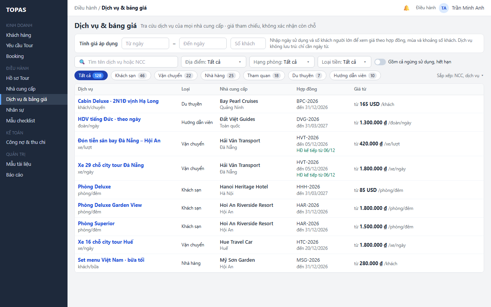
Nhập khoảng ngày và số khách một lần để thấy giá áp dụng của mọi dịch vụ kèm mùa, khoảng số khách, phụ thu và phần còn thiếu.
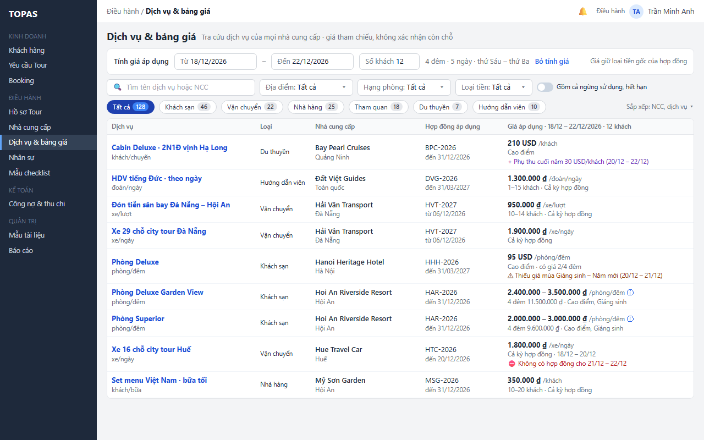
Xem cách tính giá lưu trú qua nhiều mùa và ngày thường, cuối tuần mà không mở bảng giá.
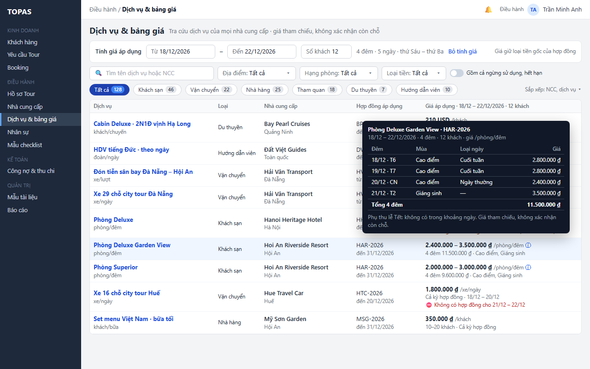
Thu hẹp danh sách theo loại dịch vụ, địa điểm và hạng phòng; số trên chip cập nhật theo bộ lọc.
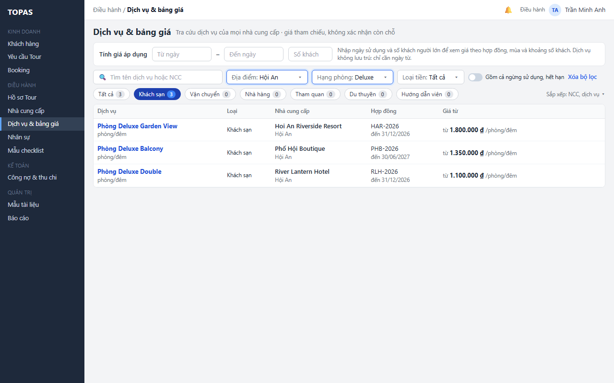
Xem ma trận giá theo mùa của hợp đồng đang chọn; các ô được dùng cho ngày và số khách đã nhập được tô sáng.
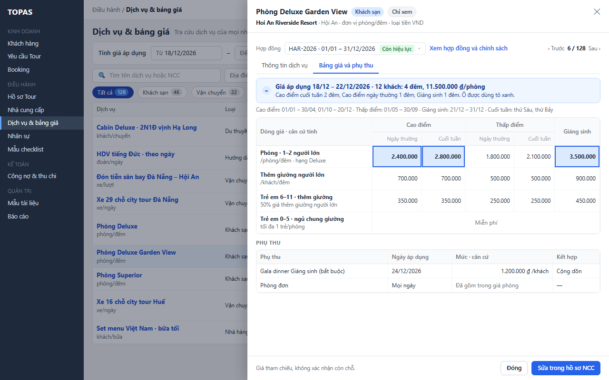
Xem mô tả, đơn vị tính, dịch vụ bao gồm và không bao gồm để báo giá hoặc trả lời khách.
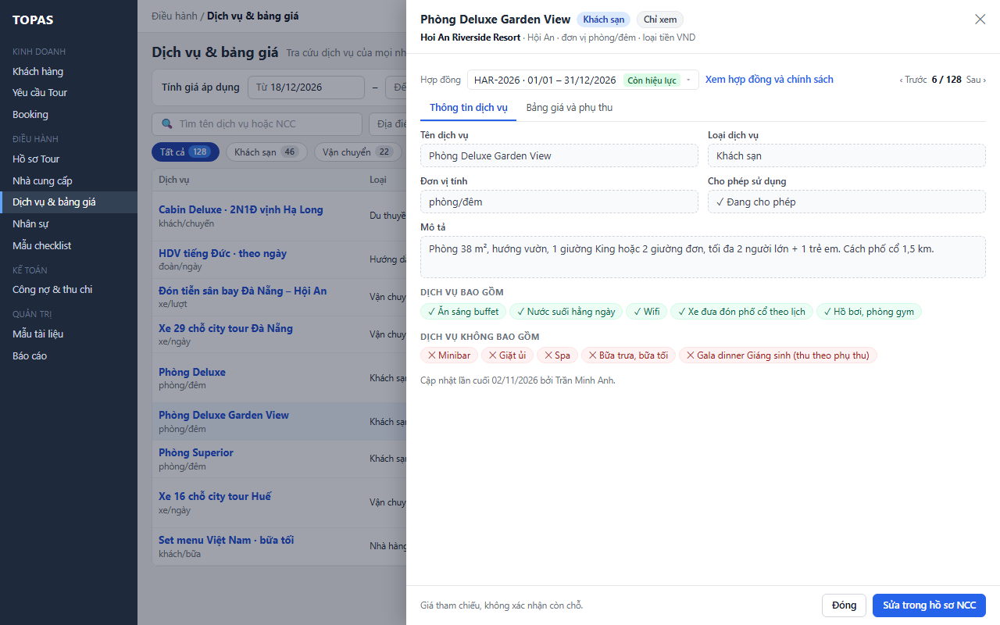
Xem bảng giá của hợp đồng khác của cùng NCC (kỳ trước hoặc kỳ sau) mà không rời màn.
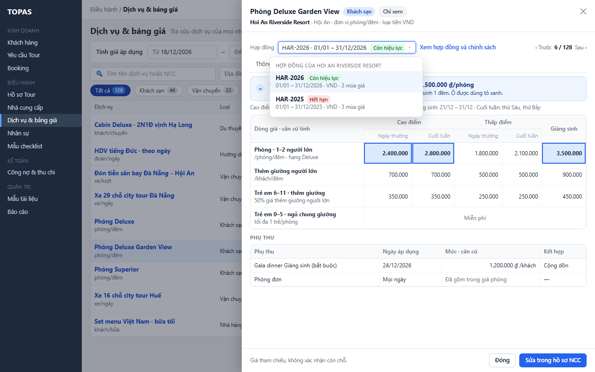
Điều hành bấm Sửa trong hồ sơ NCC; DH03.3 mở đúng dịch vụ và hợp đồng, bảng trượt DH05 ở chế độ sửa.
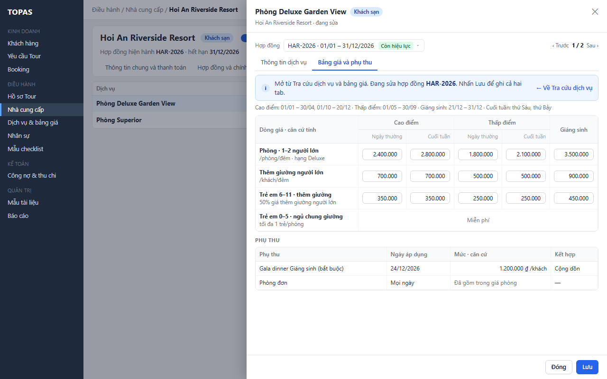
Kinh doanh tra cứu giá để báo giá; bảng trượt chỉ có Đóng, không có thao tác sửa.
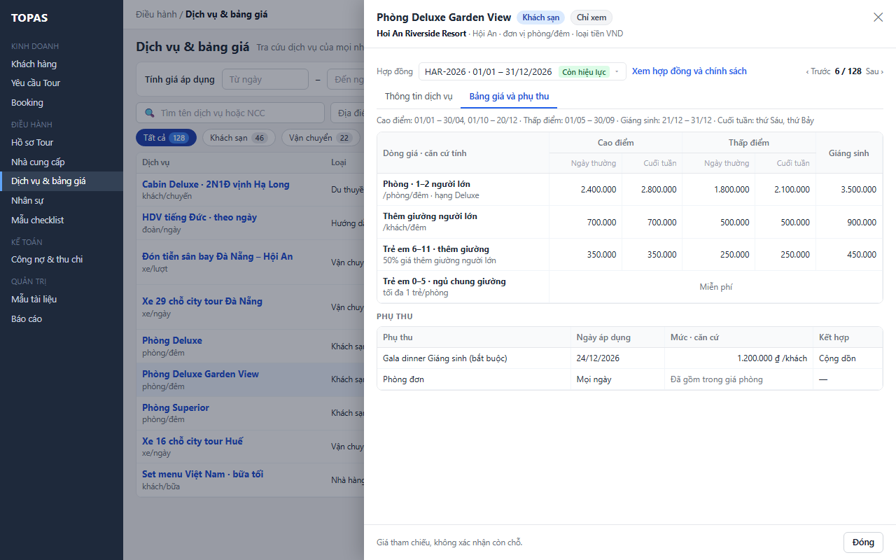
Bật công tắc để xem thêm dịch vụ đang bị ẩn; dòng mờ kèm lý do bị ẩn.
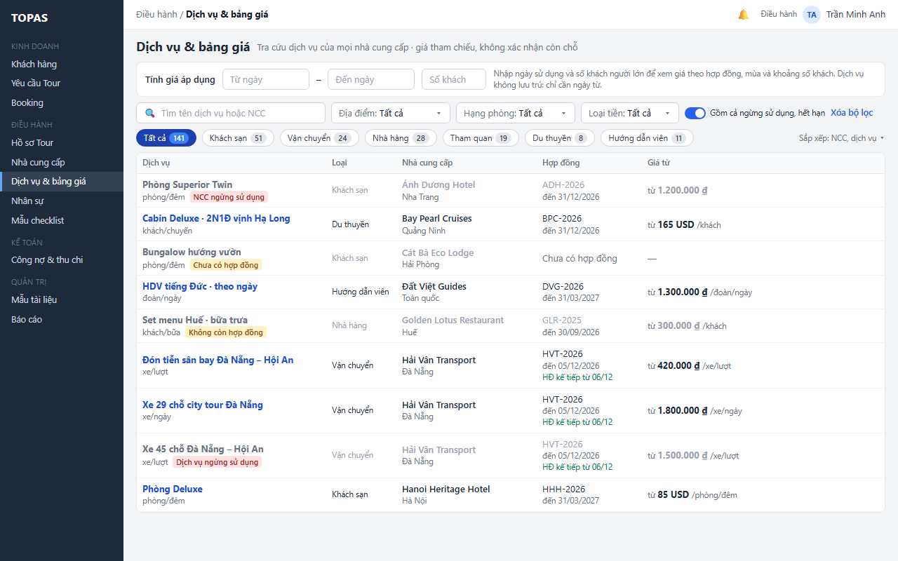
Phân biệt rõ thiếu giá mùa, không có hợp đồng cho một phần ngày và không có mức cho số khách; không hiển thị giá 0.
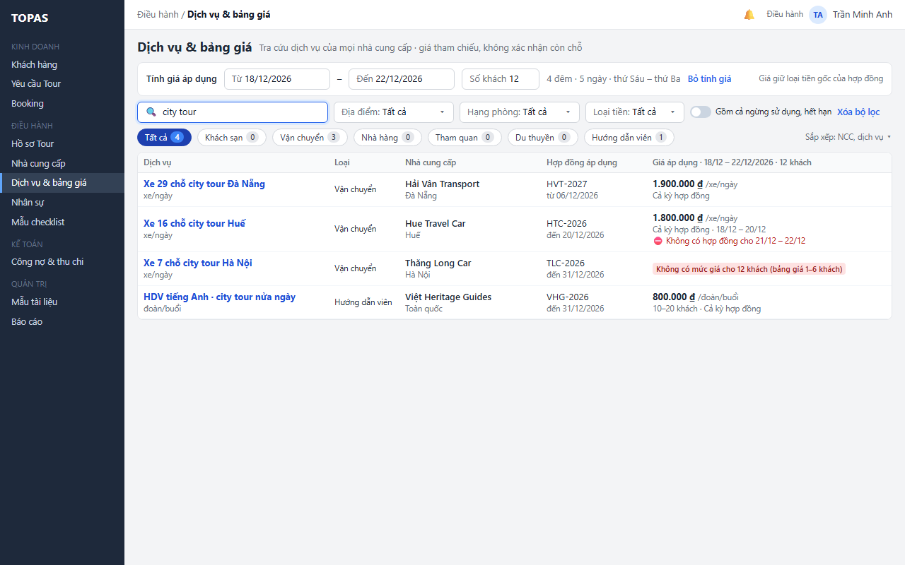
Báo lỗi ngay tại ô nhập; chưa áp dụng tính giá cho tới khi dữ liệu hợp lệ.
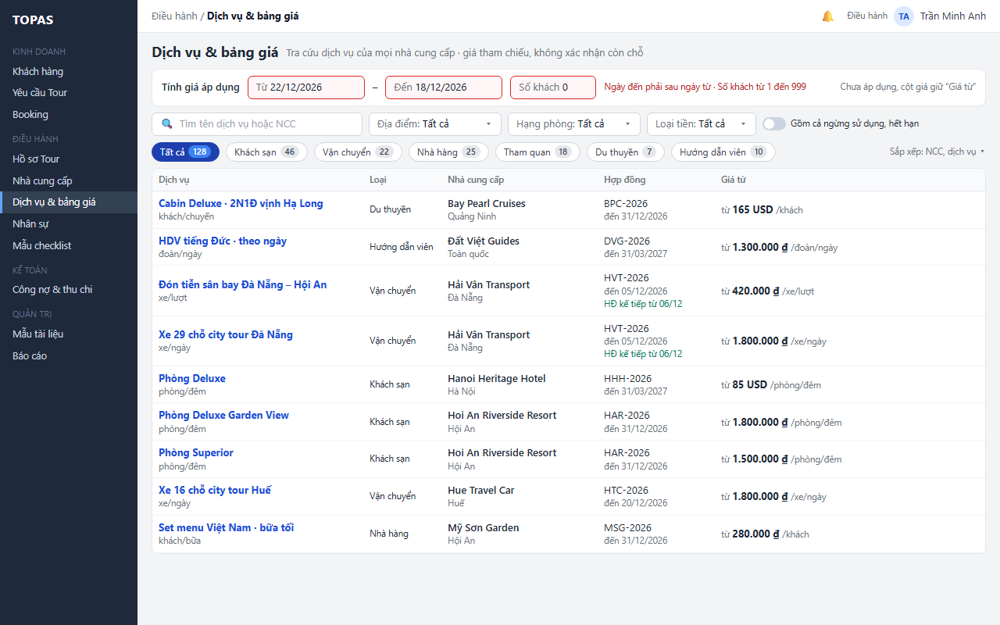
Phân biệt không khớp với bị ẩn; chỉ ra số dịch vụ khớp đang bị ẩn và cách xem.
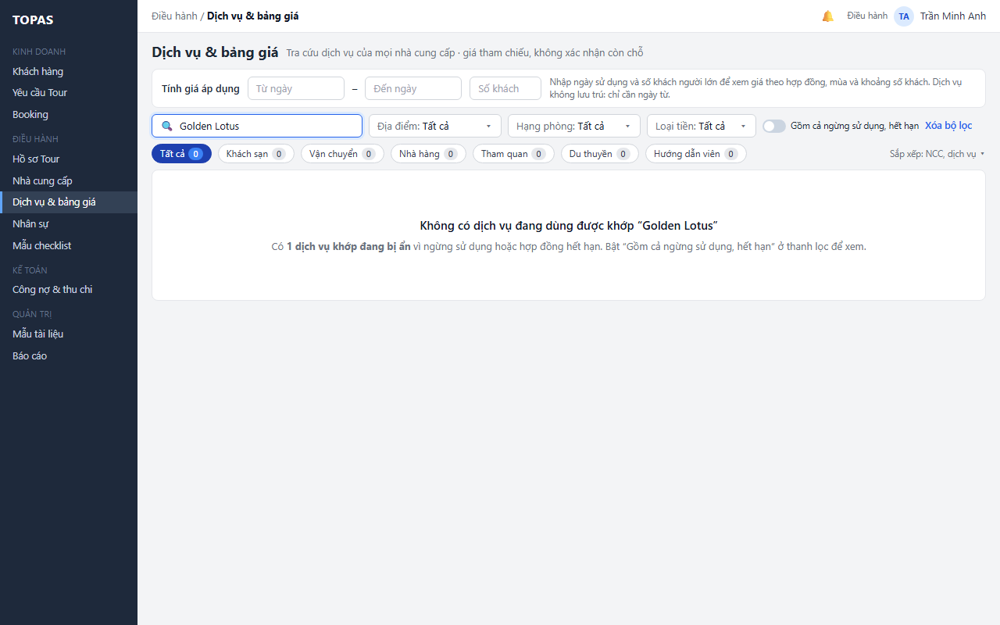
Giữ ngày, số khách và bộ lọc; cho thử lại khi không tải được dữ liệu.
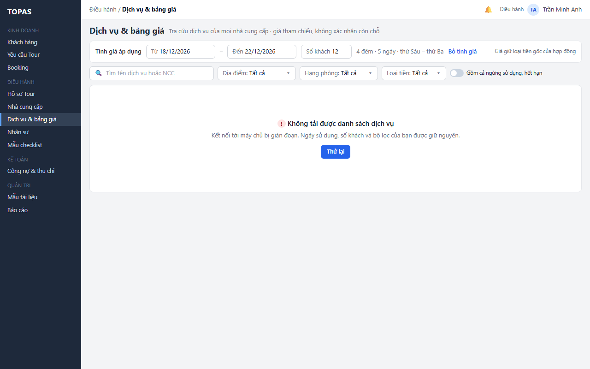
Báo dữ liệu đang xem đã cũ vì Điều hành vừa lưu ở hồ sơ NCC; tải lại bằng một lần bấm.
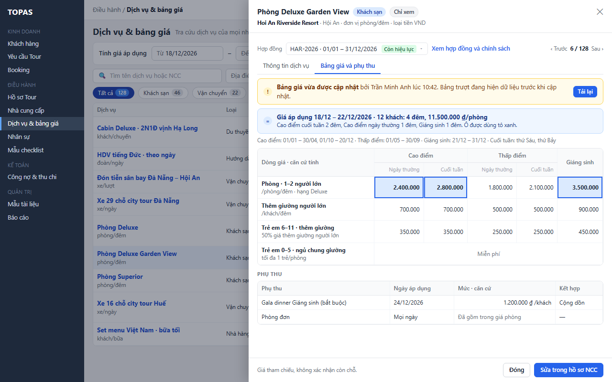